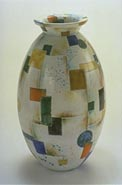
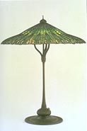
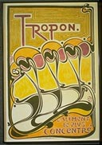
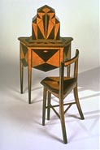
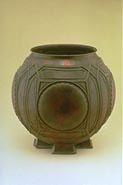

The Minneapolis Institute of Arts Announces Major Gift from Norwest Bank MinnesotaNorwest Bank Minnesota donated its collection of decorative and applied arts, valued at an estimated book value of nearly $5 million to the Institute. The collection includes 471 of the finest examples of design of the Modernism period from the late 19th and early 20th century. Download the press release (Microsoft Word 6.0 format) Visit the Norwest website. |
|
 Gustav Heinkel |
 Louis Comfort Tiffany (American, 1848-1933) Mandarin (Lotus Leaf) Leaded Glass and Bronze Lamp 1900-1905 Height 31" x Diameter 24" (shade) |
 Henry van de Velde (Belgian, 1863-1957) Tropon, 1898 Poster/color lithograph; 44" x 30" |
|
 Abel Faidy (1895-1965) Swiss-American Telephone Stand and Chair, c. 1927 Ebonized walnut and maple marquetry Telephone Stand: Height 44" x Width 26" x Depth 13" Chair: Height 30" x Width 20" x Depth 14" |
 Frank Lloyd Wright (American, 1867-1959) Urn, c. 1903 Molded and hand-hammered sheet copper Height 18" x Diameter 19" |
|